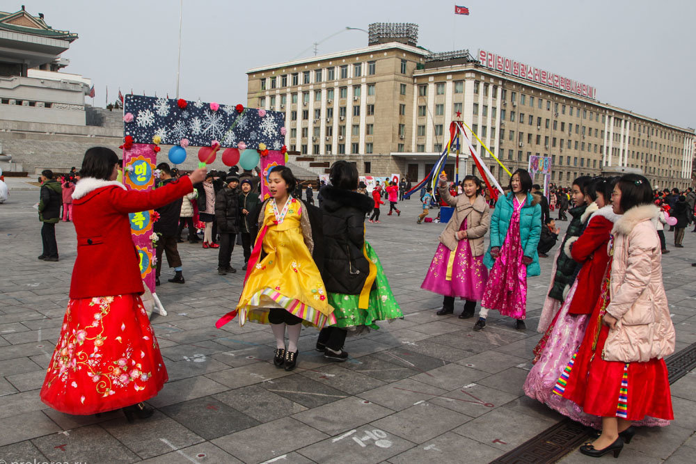

Народности
КНДР — моноэтническое государство: корейцы составляют около 99 % населения. Имеются китайское (около 50 000 человек) и японское (около 1800 человек) национальные меньшинства.
Официальный язык — корейский. Между диалектами двух корейских государств имеется немало различий, но носители разных вариантов корейского языка могут понять друг друга.
Факты
КНДР-Индустриально-аграрная страна с гибридной развивающейся экономикой. Объём ВВП по номиналу за 2017 год составил 17,364 миллиарда долларов США (около 685 долларов США на душу населения). Денежная единица — северокорейская вона
Климат
Преобладает солнечная и сухая погода. Наиболее суровые условия наблюдаются в горах на севере страны. Здесь средние температуры января составляют −10…-20 °С, абсолютные минимумы достигают −35…-40 °С и ниже. Самая мягкая, короткая и бесснежная зима имеется на юго-западном и юго-восточном побережье страны.